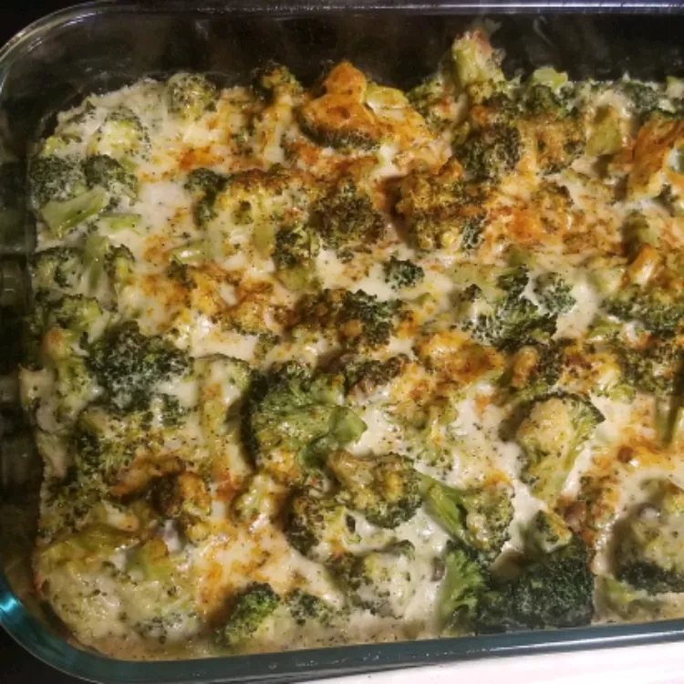

Broccoli Cheese

This recipe is perfect for Thanksgiving,
If you have children or some come to visit,
I guarantee they will eat this vegetable dish.
It is also fabulous with a Christmas ham.
Ingredients
- 1 (10.5 ounce) can condensed cream of mushroom soup
- 1 cup mayonnaise
- 1 egg, beaten
- ¼ cup chopped onion
- 3 (10 ounce) packages frozen chopped broccoli
- 8 ounces shredded sharp Cheddar cheese
- salt and pepper to taste
- 1 dash paprika
Steps for preparation
- Preheat the oven to 350 degrees F (175 degrees C). Butter a 9x13-inch baking dish.
- Whisk condensed soup, mayonnaise, egg, and onions together in a medium mixing bowl until combined.
- Place frozen broccoli into a very large mixing bowl and break it up if necessary; add soup mixture and mix well to coat.
Sprinkle with cheese and mix well; spread mixture into the prepared baking dish. Season with salt, pepper, and paprika.
- Bake in the preheated oven for 45 minutes to 1 hour.